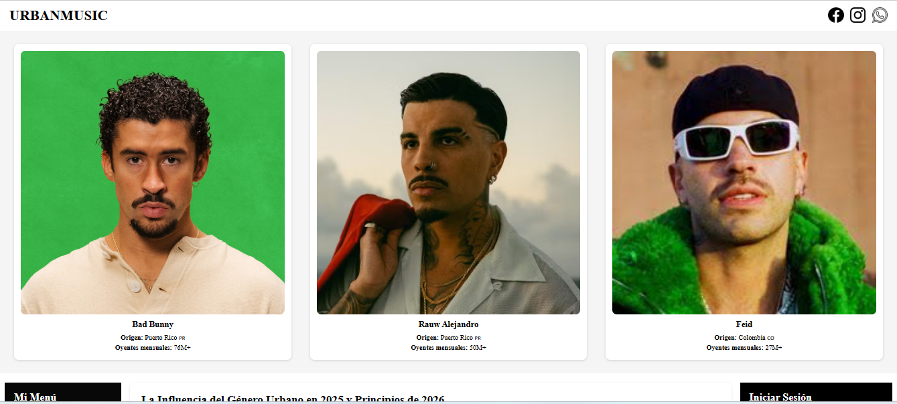
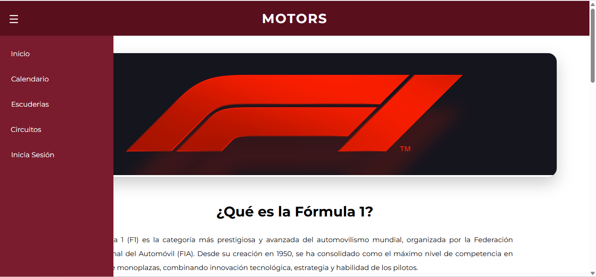
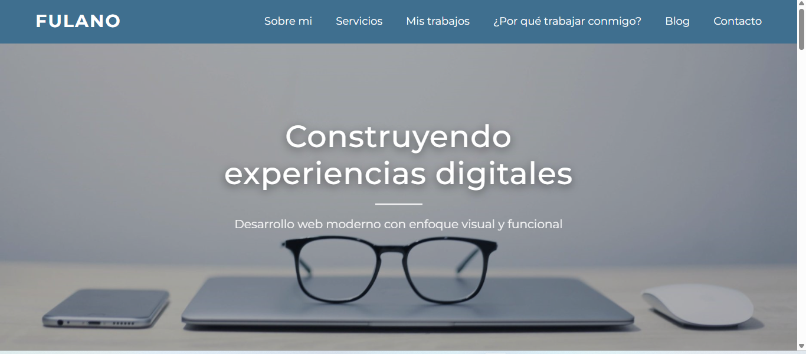
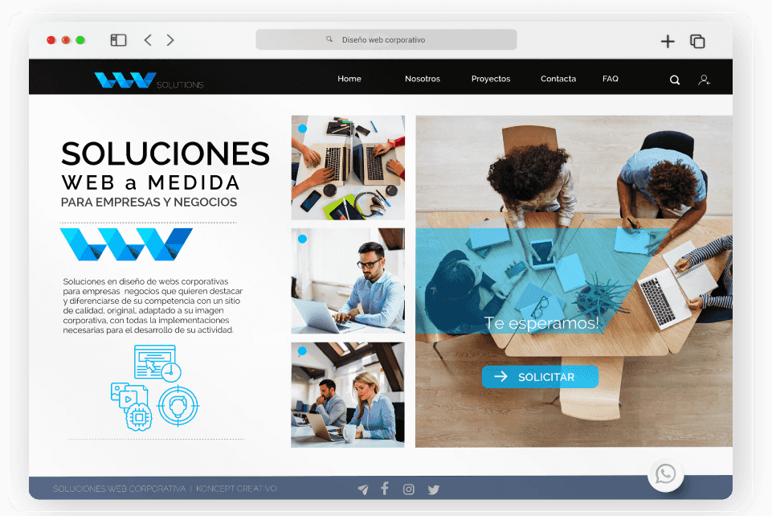

Dara Anaid Castillo Morales
Desarrollo soluciones digitales funcionales y atractivas, combinando lógica, diseño y tecnología para crear experiencias web modernas
Soy Ingeniera en Sistemas Computacionales especializada en desarrollo web y creación de soluciones digitales funcionales. Me apasiona integrar lógica, diseño y tecnología para construir experiencias modernas centradas en el usuario.
Comprometida con la mejora continua, amplio constantemente mis conocimientos en desarrollo de software y tecnologías emergentes. Busco aportar soluciones eficientes, escalables y alineadas a las necesidades del entorno empresarial.
Experiencia en HTML, CSS y diseño responsive. Desarrollo de interfaces modernas centradas en el usuario.
Aplicación de lógica y estructuras de datos para resolver problemas. Desarrollo de soluciones eficientes y escalables.
Diseño y gestión de bases de datos relacionales. Modelado de información, consultas SQL y optimización de estructuras para garantizar integridad y eficiencia en los datos.
Diseño de soluciones estructuradas y escalables. Aplicación de buenas prácticas, separación de responsabilidades y organización eficiente del código.
Planificación y organización de proyectos de desarrollo de software. Trabajo colaborativo, definición de requerimientos y seguimiento de objetivos para garantizar resultados efectivos.
Uso de Git para el control y seguimiento de cambios en proyectos de software. Manejo de ramas, commits estructurados y trabajo colaborativo mediante repositorios remotos.

Plataforma informativa con diseño moderno y estructura responsiva.
Visitar sitio
Sitio web temático con estadísticas, equipos y diseño dinámico.
Visitar sitio
Diseño profesional con secciones estructuradas y navegación clara.
Visitar sitioProyecto académico con enfoque en arquitectura y modelado UML.
Visitar sitio
Diseño enfocado en experiencia de usuario y conversión.
Visitar sitioEstoy disponible para oportunidades profesionales, prácticas o colaboración en proyectos. Puedes enviarme un mensaje o contactarme directamente por correo.